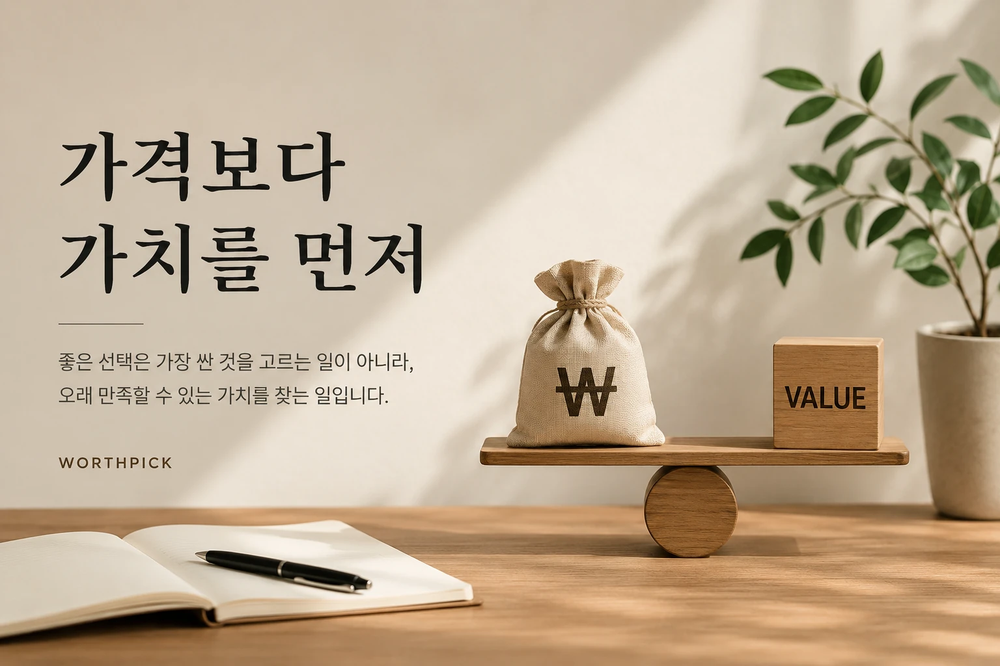

가격보다 가치를 먼저 봐야 하는 이유
우리는 매일 무언가를 선택합니다. 제품을 고르고, 서비스를 비교하고, 시간을 어디에 쓸지 결정합니다. 그런데 많은 선택은 생각보다 단순하게 끝납니다. “어느 것이 더 싼가?”라는 기준 하나로 말입니다.
물론 가격은 중요합니다. 같은 품질이라면 저렴한 선택이 합리적입니다. 하지만 모든 선택을 가격만으로 판단하면, 당장은 아낀 것 같아도 시간이 지나 더 큰 비용을 치르게 되는 경우가 많습니다.
가격과 가치는 다르다
가격은 숫자로 바로 보입니다. 1만 원, 10만 원, 100만 원처럼 비교하기 쉽습니다. 반면 가치는 바로 보이지 않습니다. 사용 편의성, 내구성, 시간 절약, 만족감처럼 경험하고 나서야 알 수 있는 경우가 많습니다.
그래서 우리는 종종 가격은 낮지만 가치도 낮은 선택을 하게 됩니다. 처음에는 싸게 샀다고 생각하지만, 금방 고장 나거나 불편해서 다시 사게 되면 결과적으로 더 비싼 선택이 됩니다.
가치 있는 선택의 기준
WORTHPICK이 생각하는 가치 있는 선택은 단순히 비싼 것을 고르는 것이 아닙니다. 가격이 높다고 무조건 좋은 것도 아니고, 저렴하다고 무조건 나쁜 것도 아닙니다.
- 오래 사용할 수 있는가
- 사용자의 시간을 줄여주는가
- 불편함을 실제로 해결해주는가
- 비슷한 제품보다 기준이 명확한가
- 지불한 가격 이상의 만족을 주는가
이 기준을 통과한 선택은 시간이 지날수록 만족도가 높아집니다. 반대로 가격만 보고 고른 선택은 시간이 지날수록 아쉬움이 남을 수 있습니다.
싸게 사는 것보다 중요한 것
좋은 소비는 돈을 많이 쓰는 것이 아니라, 불필요한 후회를 줄이는 것입니다. 특히 매일 사용하는 제품이나 생활에 직접 영향을 주는 선택일수록 가격보다 가치가 중요해집니다.
예를 들어 의자, 모니터암, 가습기, 공기청정기, 침구류처럼 매일 쓰는 물건은 단순히 저렴한 제품보다 오래 편하게 사용할 수 있는 제품을 고르는 편이 더 합리적일 수 있습니다.
WORTHPICK이 다루고 싶은 것
WORTHPICK은 세상의 모든 가치 있는 것들을 소개하는 것을 목표로 합니다. 제품 리뷰, 생활 꿀팁, IT & AI 정보, 추천 콘텐츠 모두 결국 하나의 질문으로 연결됩니다.
앞으로 WORTHPICK에서는 단순한 인기 순위보다 왜 선택할 만한지, 어떤 사람에게 맞는지, 무엇을 기준으로 봐야 하는지를 중심으로 콘텐츠를 정리하려고 합니다.
마무리
가격은 선택의 중요한 기준이지만, 유일한 기준이 되어서는 안 됩니다. 오래 쓰고, 자주 쓰고, 실제로 도움이 되는 것이라면 조금 더 신중하게 가치를 따져볼 필요가 있습니다.
WORTHPICK은 앞으로도 가격보다 가치를 먼저 보는 시선으로, 일상에 도움이 되는 선택지를 소개하겠습니다.
FAQ
Q. 비싼 제품이 항상 가치 있는 선택인가요?
아닙니다. 가격이 높아도 실제 사용성이 낮으면 좋은 선택이 아닐 수 있습니다. 중요한 것은 가격 대비 만족도와 지속성입니다.
Q. 가성비와 가치는 다른 개념인가요?
가성비는 가격 대비 성능에 가깝고, 가치는 성능뿐 아니라 사용 경험, 시간 절약, 만족감까지 포함하는 더 넓은 개념입니다.
Q. WORTHPICK은 어떤 콘텐츠를 다루나요?
제품 리뷰, 생활 정보, IT & AI, Worth Pick 추천 콘텐츠를 중심으로 실용적인 선택 기준을 제공합니다.